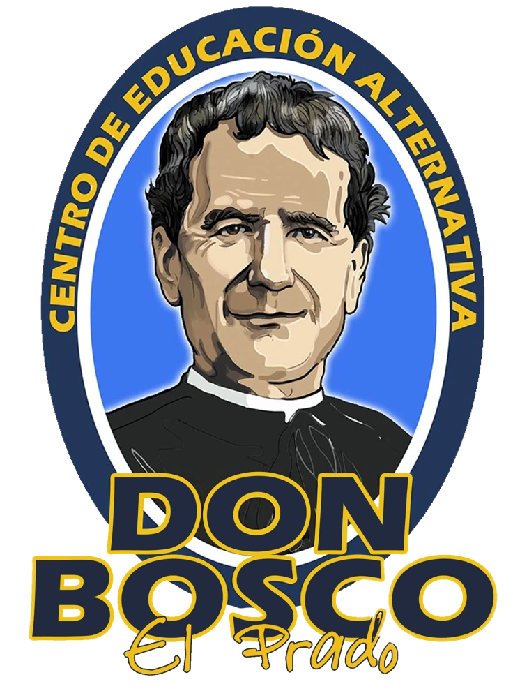

CEA Don Bosco “D” · El Prado
Defensas de Proyectos Finales 2026
Diseño Gráfico · Técnico Medio II · Turno noche
Orden y títulos confirmados. Los espacios de Excelencia Académica corresponden a socializaciones de artículos elaborados con la tutoría del Lic. Ivan Delgado Avila.
Martes 24 de noviembre
| Inicio / fin | Participante y tema | Modalidad |
|---|---|---|
| 19:00 19:15 | Acto de inauguración y apertura del evento académico | 15 minutos |
| 19:15 19:35 | Paola Patricia Morales Laimicusi Aplicación del diseño gráfico en la elaboración y producción de materiales editoriales para la Comisión de Alfabetización y Literatura en Aymara (C.A.L.A.) durante la Práctica Laboral Comunitaria | Práctica laboral comunitaria |
| 19:35 19:55 | Ray Tarifa García Emprendimiento de diseño gráfico especializado en identidad visual y comunicación digital para el sector odontológico | Emprendimiento productivo |
| 19:55 20:05 | Wara Mireya Navia Limachi Socialización de artículo El inevitable cambio de ver la vida con ojos de diseñador en el CEA Don Bosco “D” | Excelencia académica |
| 20:05 20:25 | Alain Benjamin Avalos Valenzuela Reforma Studio - Estudio de diseño gráfico, publicidad, multimedia, web | Emprendimiento productivo |
| 20:25 20:45 | Joel Rodrigo Mamani Aguilar Rafael Alberto Perez Sanjines Plan de implementación de “Centauro Print” emprendimiento de diseño y producción de identidad visual y material publicitario para microemprendimientos de servicios y de comercio en la ciudad de La Paz | Emprendimiento productivo |
| 20:45 20:55 | Anahi Loza Blanco Socialización de artículo Revalorización de la cultura Callisaya en el diseño grafico del CEA Don Bosco “D” | Excelencia académica |
| 20:55 21:15 | Ivan Mijael Saenz Moya Arte Chief Estudio de diseño de packaging e identidad visual para hoteles gastronómicos y restobares | Emprendimiento productivo |
| 21:15 21:25 | Deliberación del jurado | 10 minutos |
| 21:25 21:30 | Cierre de la jornada | 5 minutos |
Jurado de la jornada
- Lic. Eliana Ingrid Andrade Machaca · Jurado externo
Diseñadora gráfica, ilustradora y artista plástica. - Lic. Roly Huanca Huari · Jurado externo
Docente de la Academia Nacional de Bellas Artes “Hernando Siles” y de la carrera de Artes Plásticas de la UPEA. - Lic. Edgar Antonio López Mercado · Jurado interno
Docente de la carrera de Diseño Gráfico. - Lic. Camila Karin Maldonado Canaza · Jurado externo
Máster y licenciada en Diseño Gráfico y Comunicación Visual. Directora de arte y diseñadora gráfica.
Tutoría: Lic. Willy Renjifo Mamani, docente de Diseño Gráfico: Emprendimiento Productivo y Práctica Laboral Comunitaria. Lic. Ivan Delgado Avila, director del CEA Don Bosco “D”: Excelencia Académica.
Miércoles 25 de noviembre
| Inicio / fin | Participante y tema | Modalidad |
|---|---|---|
| 19:00 19:20 | Wilfredo Apaza Mamani Arte & Impresión - Diseño gráfico e impresión para pequeños negocios de la ciudad de La Paz | Emprendimiento productivo |
| 19:20 19:40 | Jhoselin Cielo Sirvas Guisbert Estudio de diseño gráfico “C&E Design” para la prestación de servicios de identidad digital y packaging, aplicado a Multitienda Eithan en la ciudad de La Paz. | Emprendimiento productivo |
| 19:40 20:00 | Josue Huañapaco Marconi Crimson Life - Branding para negocios de costura y confeccion | Emprendimiento productivo |
| 20:00 20:10 | Leydy Marian Blanco Lima Socialización de artículo Mi experiencia en el CEA Don Bosco “D”, de mirar a observar | Excelencia académica |
| 20:10 20:30 | Fidelia Zoila Vega Gutiérrez Estudio Gráfico Fuera de Línea - Diseño de un estudio gráfico especializado en identidad visual deportiva para ligas amateur mediante estrategias de branding en la ciudad de La Paz y El Alto | Emprendimiento productivo |
| 20:30 20:50 | Fabiola Larico Apaza Implementación del estudio de diseño gráfico digital y desarrollo web Fabu Studio orientado al fortalecimiento comercial de microemprendimientos en El Alto, aplicado al caso Stay Bloom | Emprendimiento productivo |
| 20:50 21:10 | Ismael Enriquez Rada Plan de emprendimiento productivo para la implementación de la agencia de diseño gráfico “Penumbra”, especializada en servicios de rebranding y comunicación gráfica adaptable para cafés tradicionales de paso tipo kiosco del centro paceño. | Emprendimiento productivo |
| 21:10 21:20 | Deliberación del jurado | 10 minutos |
| 21:20 21:25 | Cierre de la jornada | 5 minutos |
Jurado de la jornada
- Lic. Eliana Ingrid Andrade Machaca · Jurado externo
Diseñadora gráfica, ilustradora y artista plástica. - Lic. Roly Huanca Huari · Jurado externo
Docente de la Academia Nacional de Bellas Artes “Hernando Siles” y de la carrera de Artes Plásticas de la UPEA. - Lic. Edgar Antonio López Mercado · Jurado interno
Docente de la carrera de Diseño Gráfico.
Tutoría: Lic. Willy Renjifo Mamani, docente de Diseño Gráfico: Emprendimiento Productivo y Práctica Laboral Comunitaria. Lic. Ivan Delgado Avila, director del CEA Don Bosco “D”: Excelencia Académica.